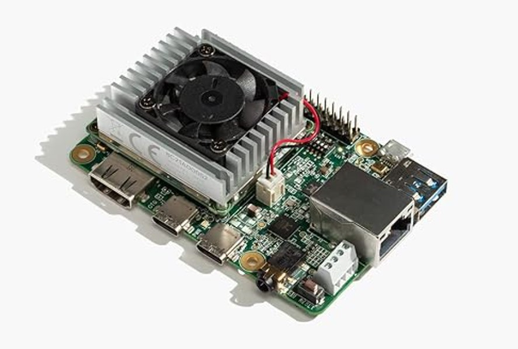
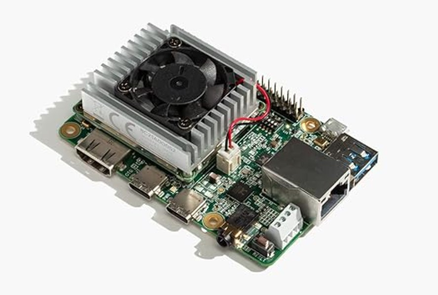

Liam McHugh
I am a graduate student at Columbia University studying Mechanical Engineering with a focus on ML & robotics. I received my B.S. in Mechanical Engineering from the University of California, Berkeley.
I'm primarily interested in information network analysis, cognitive systems and mechatronic devices.
Technical Leadership

Technical Project Manager: Liquid-Powered Rocket
Led a 30+ member student team to develop and launch a LOX/Ethanol rocket.
Learn More

Teaching Assistant: Fluid Dynamics
Weekly recitations applying fluid dynamics principles to real-world applications.
Academic Research
Emotive Cognition
Independent Research, Lead Developer — New York, NY (Oct-Dec 2024)
Impulse-sensitive generative music for focus & mood stabilization. Fusing joint-encoded realtime focus & activity data with generative audio in joint encoding architecture for focus & task attention control.
Multimodal empathetic agent for strategic assistance in real-time emotive cognition tasks. Low-latency processing architecture to aid individuals navigating mobile, dynamic social environments.
Learn More
Distributed Energy Resource Management
Goldman School of Public Policy / General Motors Vehicle-to-Grid battery arbitrage strategies using sota ML techniques for market prediction, nonconvex optimization, & grid health analysis; guided policy recommendations for commercial & utility EV sector.
Renewable Energy Resources robust portfolio management for large independent consumer load sites.
Berkeley Laser Thermal Lab

Model Diagnostics of Phase Explosion in Femtosecond Laser Ablation
Ablation event energy transport model & supercontinuum generation methods for pump-probe scattering spectroscopy. Characteristic control applications in micromachining, energy catalysis and nanoscale medical treatments.
Engineering Projects

Active Headphones for Selective Source Isolation
Custom-built headphones with voice selectivity for focused learning.
 

EMG-Headband Instrument Effects Modulator
Developing a wireless headband device for neuro-controlled guitar pedal effects modulation. Rolling ICA and microcomputer system architecture for real-time signal processing.

MicroSurgical Suture for Targeted Neurovascular Hemostasis
Autonomously-enabled microgripping suture with integrated flow sensor for neurovascular and ophthalmic surgeries.

Parabolic Solar-Harvesting Satellite
Satellite prototype with reaction-wheel directional control for space solar and MASER alignment

Contact Me
Email:
LinkedIn: linkedin.com/in/liam-s-mchugh
GitHub: github.com/liammchugh
Note: This website is under construction from base HTML. Feel free to contact me with site recommendations.